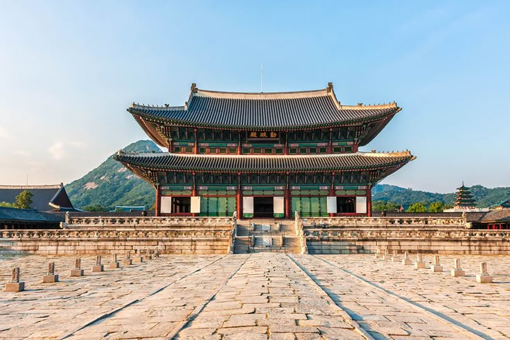
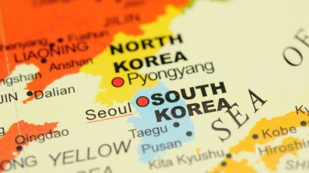
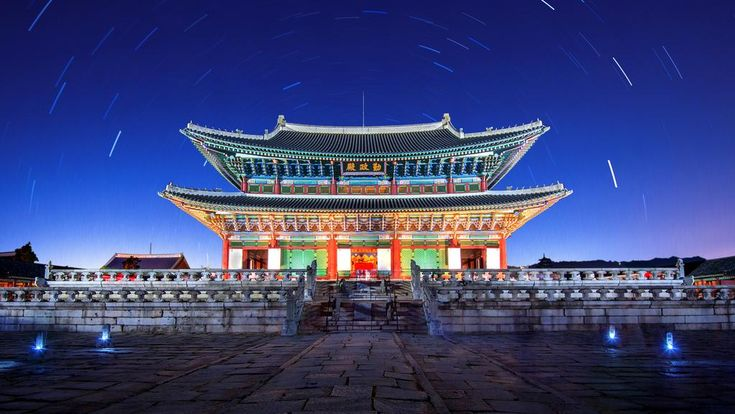
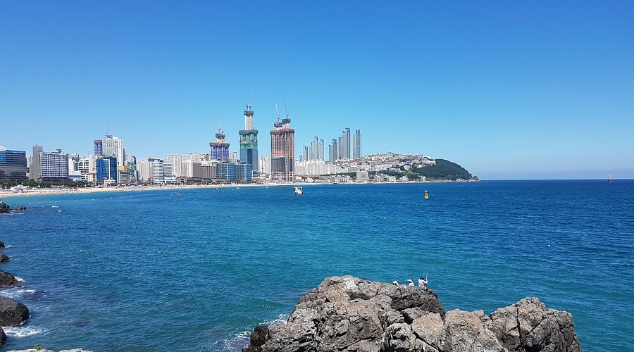
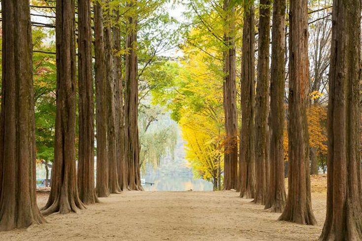
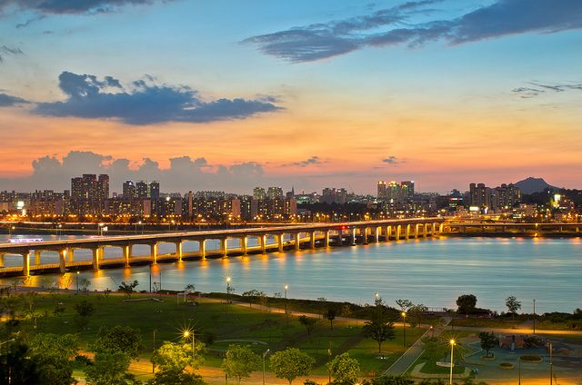
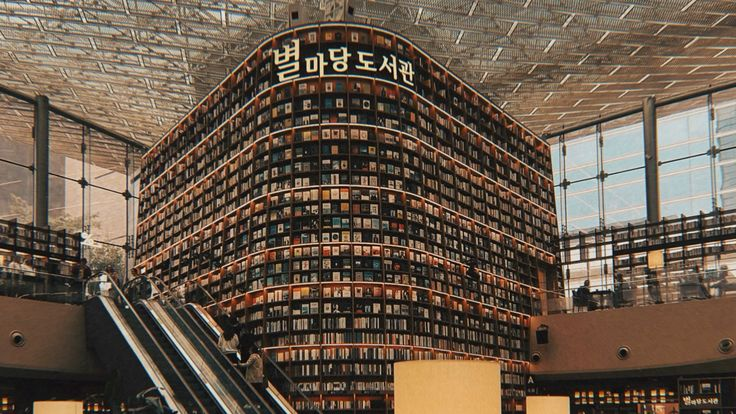
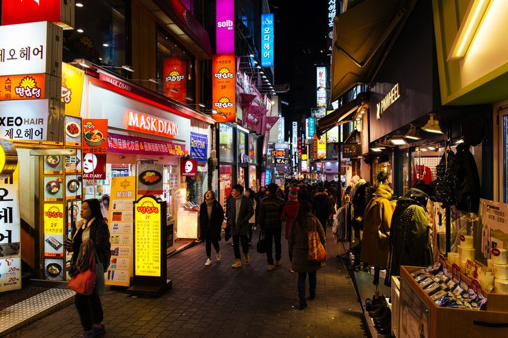
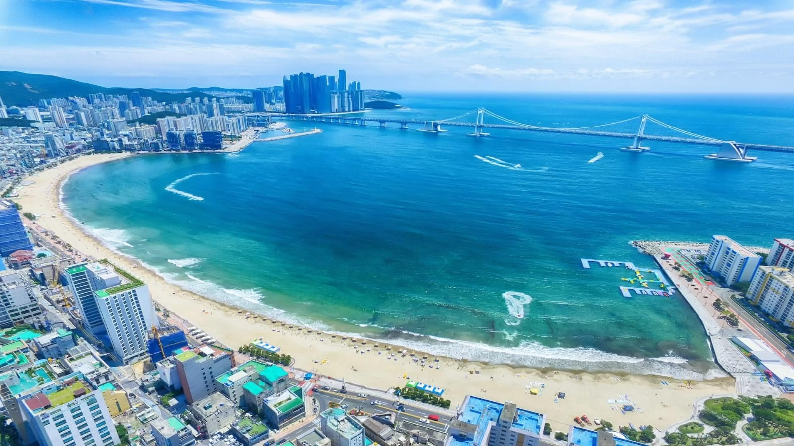

Sejarah

Sejarah Korea Selatan bermula dari peradaban kuno di Semenanjung Korea. Pada masa lalu, wilayah Korea dikuasai oleh berbagai kerajaan, seperti Goguryeo, Baekje, dan Silla. Ketiga kerajaan tersebut memiliki peran penting dalam perkembangan budaya dan sejarah Korea.
Pada tahun 1392, berdirilah Dinasti Joseon yang bertahan selama lebih dari 500 tahun. Pada masa ini, budaya, pendidikan, dan bahasa Korea berkembang pesat. Salah satu pencapaian penting pada masa Dinasti Joseon adalah penciptaan aksara Hangul oleh Raja Sejong pada abad ke-15.
Pada tahun 1910, Korea berada di bawah kekuasaan Jepang hingga tahun 1945. Setelah Jepang kalah dalam Perang Dunia II, Korea terbebas dari penjajahan. Namun, wilayah Korea kemudian terbagi menjadi dua bagian, yaitu Korea Utara dan Korea Selatan.
Korea Selatan resmi berdiri pada 15 Agustus 1948 dengan nama Republik Korea. Tidak lama kemudian, terjadi Perang Korea pada tahun 1950–1953 antara Korea Utara dan Korea Selatan. Perang tersebut berakhir dengan gencatan senjata, tetapi kedua negara masih terpisah hingga sekarang.
Setelah perang, Korea Selatan mengalami banyak kesulitan dalam membangun kembali negaranya. Namun, melalui perkembangan industri, pendidikan, dan teknologi, Korea Selatan berhasil menjadi salah satu negara maju di Asia. Saat ini, Korea Selatan dikenal sebagai negara yang memiliki kemajuan pesat dalam bidang teknologi, ekonomi, musik, film, dan kebudayaan populer atau yang sering disebut Hallyu (Korean Wave).
Geografis

Korea Selatan atau 대한민국 (Daehanminguk) adalah negara yang terletak di Asia Timur, tepatnya di bagian selatan Semenanjung Korea. Negara ini berbatasan dengan Korea Utara (북한)di sebelah utara, sedangkan sebelah timur, selatan, dan barat dikelilingi oleh laut. Ibu kota Korea Selatan adalah 서울 (Seoul), yang terletak di bagian barat laut negara tersebut. Wilayah Korea Selatan terdiri dari pegunungan, dataran rendah, sungai, dan pulau-pulau. Salah satu pulau yang terkenal adalah 제주도 (Jejudo) atau Pulau Jeju, yang menjadi salah satu tujuan wisata populer. Luas wilayah Korea Selatan sekitar 100.000 km². Negara ini memiliki iklim sedang dengan empat musim, yaitu musim semi (봄), musim panas (여름), musim gugur (가을), dan musim dingin (겨울). Keindahan alam dan perubahan musim menjadikan Korea Selatan sebagai negara yang menarik untuk dikunjungi.
Wisata
Korea Selatan merupakan salah satu negara yang memiliki banyak tempat wisata menarik. Negara ini menawarkan berbagai macam destinasi, mulai dari istana bersejarah, pegunungan, pantai, hingga tempat hiburan modern. Keindahan alam dan kebudayaannya yang unik membuat Korea Selatan banyak dikunjungi wisatawan dari berbagai negara. Selain itu, wisatawan juga dapat menikmati makanan tradisional, suasana kota yang modern, serta bangunan khas Korea. Berikut beberapa tempat wisata terkenal di Korea Selatan:
1. Istana Gyeongbokgung (경복궁)

Istana Gyeongbokgung merupakan salah satu tempat wisata bersejarah yang paling terkenal di Korea Selatan. Istana ini dibangun pada tahun 1395 oleh Raja Taejo, pendiri Dinasti Joseon. Pada masa lalu, Gyeongbokgung digunakan sebagai pusat pemerintahan dan tempat tinggal keluarga kerajaan. Istana ini memiliki bangunan dengan arsitektur tradisional Korea yang indah, halaman luas, serta ornamen khas kerajaan. Salah satu bangunan yang terkenal adalah Geunjeongjeon, yaitu aula utama yang digunakan untuk berbagai upacara kerajaan. Pengunjung juga dapat menyaksikan upacara pergantian penjaga istana dan menyewa pakaian tradisional Hanbok untuk berfoto di sekitar kawasan istana.
Gyeongbokgung menjadi tempat yang cocok untuk mengenal sejarah, budaya, dan kehidupan kerajaan Korea pada masa lampau.
2. Menara N Seoul (N서울타워)

Menara N Seoul atau N Seoul Tower merupakan salah satu ikon terkenal kota Seoul. Menara ini berada di atas Gunung Namsan dan memiliki ketinggian sekitar 236 meter dari dasar menara. Letaknya yang berada di kawasan perbukitan membuat tempat ini menjadi salah satu lokasi terbaik untuk menikmati pemandangan kota Seoul dari ketinggian. Pengunjung dapat naik ke dek observasi untuk melihat gedung-gedung, jalan raya, dan kawasan perkotaan Seoul. Pada malam hari, pemandangan kota terlihat semakin indah karena dihiasi oleh lampu-lampu gedung dan jalanan. Di sekitar menara juga terdapat taman, restoran, serta tempat untuk berfoto.
N Seoul Tower sering menjadi tujuan wisata bagi keluarga, teman, maupun wisatawan yang ingin menikmati suasana kota Seoul dari tempat yang lebih tinggi.
3. Jeju Island (제주도)

Jeju Island atau Jejudo merupakan salah satu destinasi wisata alam yang paling populer di Korea Selatan. Pulau ini terletak di sebelah selatan Semenanjung Korea dan terkenal dengan keindahan alamnya yang beragam. Jeju memiliki pantai yang indah, air terjun, hutan, gua lava, serta pegunungan yang menarik untuk dijelajahi. Salah satu tempat terkenal di pulau ini adalah Gunung Hallasan, yaitu gunung tertinggi di Korea Selatan. Selain itu, terdapat juga Seongsan Ilchulbong, sebuah kawah gunung berapi yang terkenal dengan pemandangan matahari terbitnya. Pulau Jeju juga memiliki banyak perkebunan, taman, dan desa yang menawarkan suasana tenang.
Jeju Island sangat cocok bagi wisatawan yang ingin menikmati alam, melakukan kegiatan luar ruangan, dan melihat pemandangan yang berbeda dari suasana kota besar.
4. Haeundae Beach (해운대해수욕장)

Haeundae Beach merupakan salah satu pantai paling terkenal di Korea Selatan. Pantai ini terletak di kota Busan dan memiliki garis pantai yang luas dengan pasir yang lembut. Haeundae menjadi salah satu tujuan wisata favorit karena menawarkan pemandangan laut yang indah serta suasana kota yang modern. Pada musim panas, pantai ini ramai dikunjungi wisatawan yang ingin menikmati udara laut, bermain di sekitar pantai, dan bersantai bersama keluarga atau teman. Di sekitar kawasan Haeundae terdapat berbagai hotel, restoran, kafe, dan pusat perbelanjaan yang memudahkan wisatawan untuk menikmati liburan.
Selain keindahan pantainya, pengunjung juga dapat menikmati pemandangan gedung-gedung tinggi di sekitar kawasan pesisir. Haeundae Beach menjadi contoh perpaduan antara keindahan alam dan perkembangan kota modern di Korea Selatan.
5. Nami Island (남이섬)

Nami Island atau Namiseom merupakan tempat wisata alam yang terkenal dengan pepohonan yang berjajar rapi dan suasananya yang tenang. Pulau ini berada di wilayah Chuncheon, Provinsi Gangwon, dan dikelilingi oleh aliran Sungai Bukhan. Untuk mencapai pulau ini, wisatawan dapat menggunakan kapal feri atau jalur transportasi lain yang tersedia. Nami Island memiliki banyak jalan setapak yang dikelilingi pepohonan, taman, dan area untuk bersantai. Pemandangan di pulau ini berubah sesuai dengan musim. Pada musim semi, pengunjung dapat melihat bunga-bunga bermekaran, sedangkan pada musim gugur, daun-daun pohon berubah menjadi warna kuning dan merah yang indah.
Nami Island juga dikenal sebagai salah satu lokasi yang pernah digunakan dalam pengambilan gambar drama Korea. Karena keindahan alam dan suasananya yang nyaman, tempat ini cocok untuk berjalan-jalan, berfoto, dan menikmati waktu bersama orang terdekat.
6. Han River (한강)

Han River atau Hangang merupakan salah satu sungai terpenting dan paling terkenal di Korea Selatan. Sungai ini mengalir melewati kota Seoul dan menjadi bagian penting dari perkembangan sejarah serta kehidupan masyarakat di ibu kota Korea Selatan. Han River juga memiliki peran dalam kegiatan ekonomi, transportasi, dan perkembangan wilayah di sekitarnya. Saat ini, kawasan Han River telah dikembangkan menjadi tempat wisata dan ruang terbuka bagi masyarakat. Di sepanjang sungai terdapat taman-taman yang luas, jalur bersepeda, tempat duduk, serta area untuk berolahraga dan bersantai. Banyak masyarakat dan wisatawan datang untuk menikmati pemandangan sungai, melakukan piknik, atau menghabiskan waktu bersama keluarga dan teman. Han River juga terkenal dengan pemandangan jembatan dan gedung-gedung kota Seoul yang terlihat indah, terutama saat matahari terbenam dan malam hari. Beberapa kawasan di sekitar sungai sering digunakan untuk berbagai kegiatan dan pertunjukan. Keindahan Han River menjadikannya salah satu tempat wisata yang menggambarkan perpaduan antara alam dan kehidupan modern Korea Selatan.
7. Starfield Library (별마당도서관)

Starfield Library atau (별마당도서관) merupakan perpustakaan umum yang terkenal dan menjadi salah satu tempat wisata populer di Seoul, Korea Selatan. Perpustakaan ini terletak di dalam COEX Mall, kawasan Gangnam, dan memiliki desain interior yang sangat unik serta menarik. Starfield Library terkenal dengan rak-rak buku yang sangat tinggi dan menjulang hingga ke langit-langit. Di dalamnya terdapat ribuan buku, tempat duduk yang nyaman, dan ruang terbuka yang membuat suasananya terasa luas. Pengunjung dapat membaca buku, bersantai, menikmati keindahan arsitektur, atau mengabadikan foto dengan latar rak buku yang ikonik.
Tempat ini menjadi salah satu destinasi favorit wisatawan dan anak muda karena tampilannya yang estetik dan sering muncul di media sosial. Starfield Library juga menunjukkan perpaduan antara budaya membaca, desain modern, dan kehidupan perkotaan Korea Selatan.
8. Myeongdong Street Food (명동 길거리 음식)

Myeongdong Street Food merupakan kawasan kuliner populer di Myeongdong, Seoul, Korea Selatan. Tempat ini terkenal dengan berbagai macam makanan dan jajanan yang dijual di sepanjang jalan oleh pedagang kaki lima. Wisatawan dapat menemukan makanan khas Korea seperti tteokbokki, odeng, hotteok, gimbap, dan berbagai jajanan kekinian. Kawasan ini biasanya ramai dikunjungi pada sore hingga malam hari. Selain menikmati makanan, pengunjung juga dapat berbelanja pakaian, kosmetik, dan suvenir di toko-toko sekitar. Myeongdong menjadi salah satu destinasi wisata kuliner yang menarik karena menawarkan pengalaman menikmati makanan khas Korea dalam suasana jalanan yang ramai dan meriah.
9. Gwangalli Beach (광안리해수욕장)

Gwangalli Beach atau (광안리해수욕장) merupakan salah satu pantai terkenal di kota Busan, Korea Selatan. Pantai ini memiliki pasir yang luas dan pemandangan laut yang indah, dengan Jembatan Gwangan sebagai daya tarik utamanya. Jembatan tersebut membentang di atas laut dan terlihat sangat menakjubkan ketika dihiasi lampu pada malam hari. Di sekitar pantai, terdapat banyak kafe, restoran, dan tempat bersantai yang sering dikunjungi wisatawan. Pengunjung dapat menikmati pemandangan laut, berjalan-jalan di tepi pantai, mencicipi makanan khas Korea, serta mengabadikan foto dengan latar Jembatan Gwangan. Gwangalli Beach juga sering menjadi tempat berbagai acara dan pertunjukan, sehingga suasananya semakin meriah. Pantai ini cocok bagi wisatawan yang ingin menikmati keindahan alam sekaligus suasana kota modern Korea Selatan.
10. Cheonggyecheon Stream (청계천 ) — Seoul

Cheonggyecheon Stream adalah aliran sungai yang berada di pusat kota Seoul, Korea Selatan. Tempat ini menjadi salah satu destinasi populer yang menawarkan suasana tenang di tengah ramainya kehidupan perkotaan. Pengunjung dapat berjalan menyusuri sungai sambil menikmati pemandangan gedung-gedung di sekitar kota. Di sepanjang Cheonggyecheon Stream terdapat jalur pejalan kaki, jembatan, air terjun kecil, dan berbagai area untuk bersantai. Pada malam hari, kawasan ini dihiasi pencahayaan yang membuat suasananya semakin indah. Tempat ini cocok untuk menikmati suasana Seoul sekaligus melihat perpaduan antara alam dan kota modern.